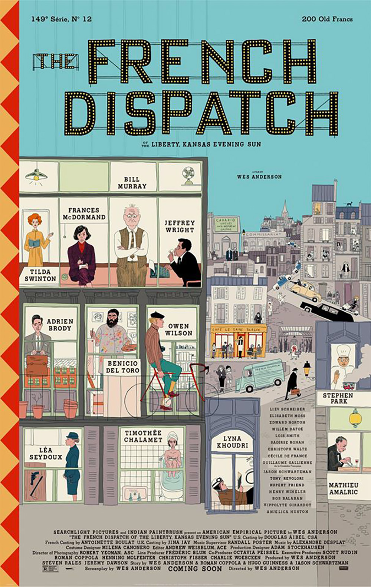

jov
oni.
Home
Info
Libri
Film
Musica
Tutti i film consigliati
Una lista
sempre in espansione
di film e serie tv
Ecco quindi la lista di quei film e quelle serie tv che ho visto e che mi sento di consigliare. I più belli sono segnati con un
trattino rosso
.
DA VEDERE
The French Dispatch
di Wes Anderson
